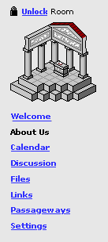

The About Us page is available on Group rooms.[1]
By clicking on About Us, a visitor will see additional information about the group, as shown below.
|  |
About us
|
Editing About Us
By default, each Group room when created will contain no About us contents. Only the owner of a room can edit the rooms's About us page. The owner can add a text description [1], a URL [1], and/or an image to the About us page[2].
When the owner of a room clicks on the About us link, they see an interface similar to what a vistor would see, except they also see a edit buttons for the text, url, and image items.
|
About us
|
If the owner clicks the edit text button, she will be presented with a text edit field. She can edit the text content and press Submit to save changes and return to the About Us page.[1]
|
Edit About Us text
|
If the owner clicks the edit image button, she will see a page with a field into which she can type a title and a upload button to upload an image from a local file. [2]
|
Enter a title (optional) and then select the file to upload from your computer. Title
|
If the owner clicks the edit link button, she will see a page with text field for the URL. She can edit the URL and press Submit to save changes and return to the About Us page.[1]
An anchor tag will automatically be inserted around the URL to make it clickable.[1]
|
Enter a URL for more information about your group URL
|
Notes
We could do a check on a URL that is entered to verify that the page really exists or that it is a well-formed URL. For the current release, we will simply parse [1] the URL that is entered and ensure that the anchor tag includes a http:// in front of the URL so that is is a well-formed anchor. Later versions may send an http request to verify that it exists [3]